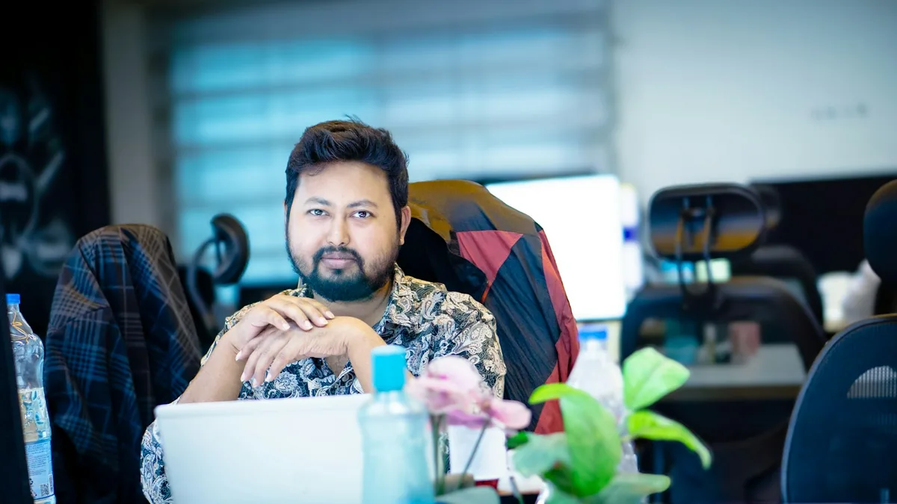
Product demos
Walk through a feature once. Zooms land on every click so viewers never squint.
Hit stop and it’s already edited. Zooms follow your clicks, your camera sits in frame, every word is captioned and the dead air is gone. Nothing gets uploaded.
Free on macOS, Windows and Linux, or run it in Chrome with no install.
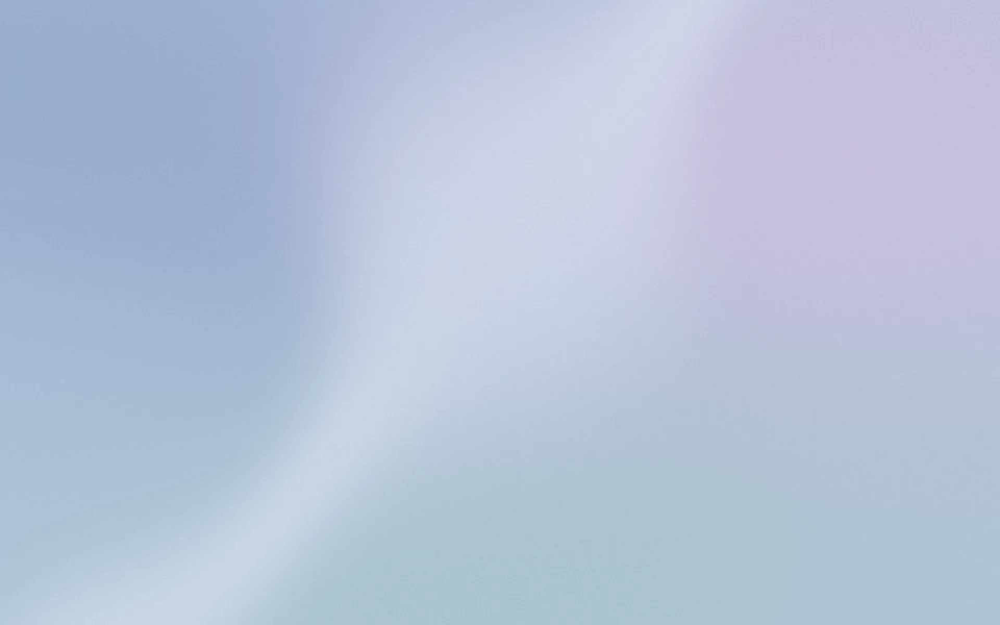
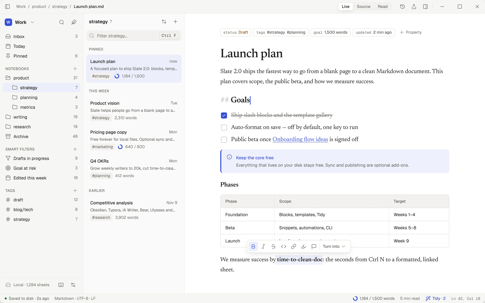
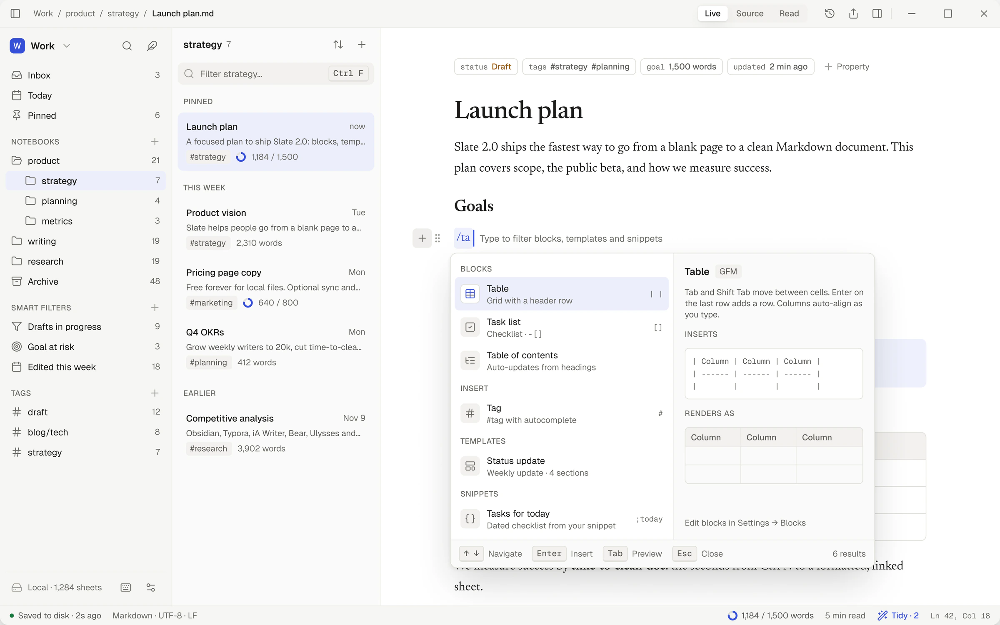
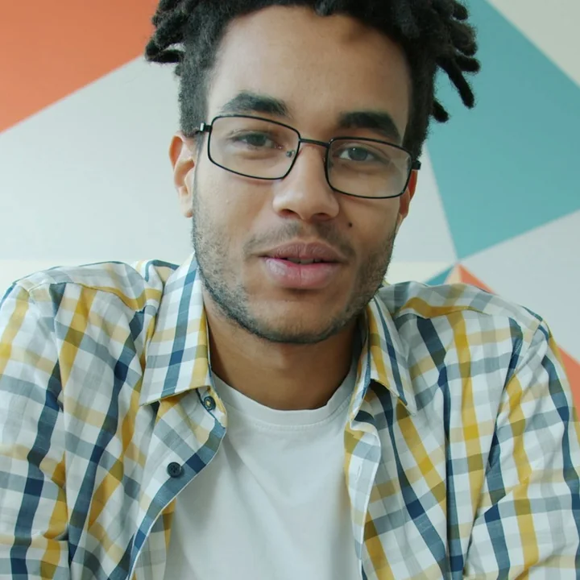
Slipstream records screen, camera and mic as separate tracks, then lays them out the way a good editor would. Nothing is baked in, so you can change any of it later.
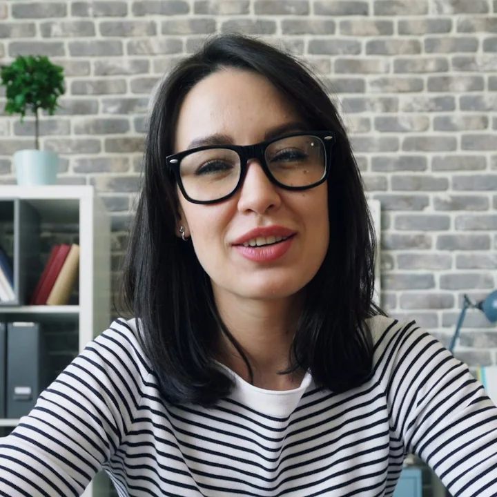
The transcript is the timeline. Delete a sentence and the video follows. Every cut can be restored, and nothing touches your original files.
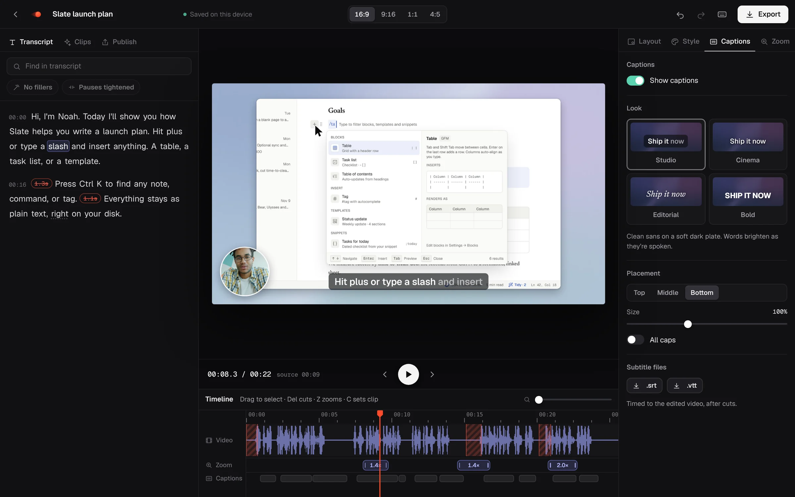
Switch from widescreen to vertical and Slipstream reframes the shot around your zooms and your face. Captions resize to match.
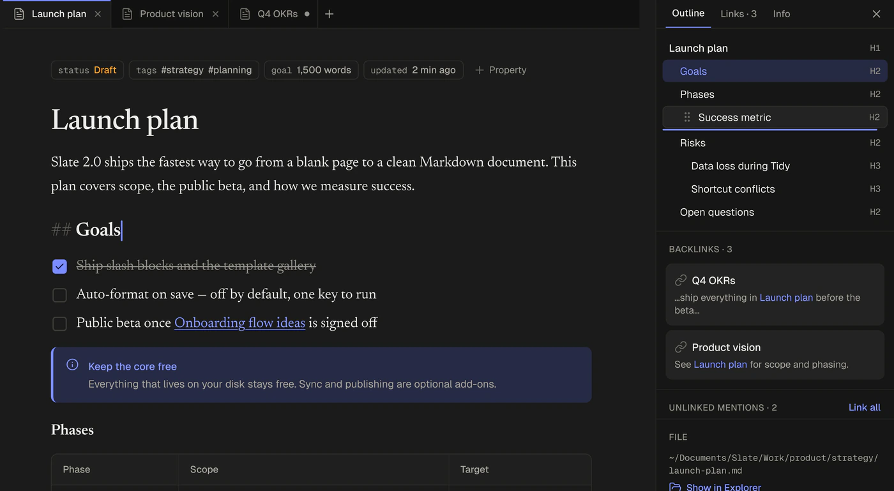
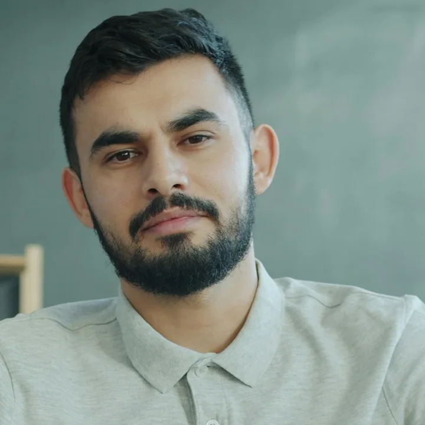
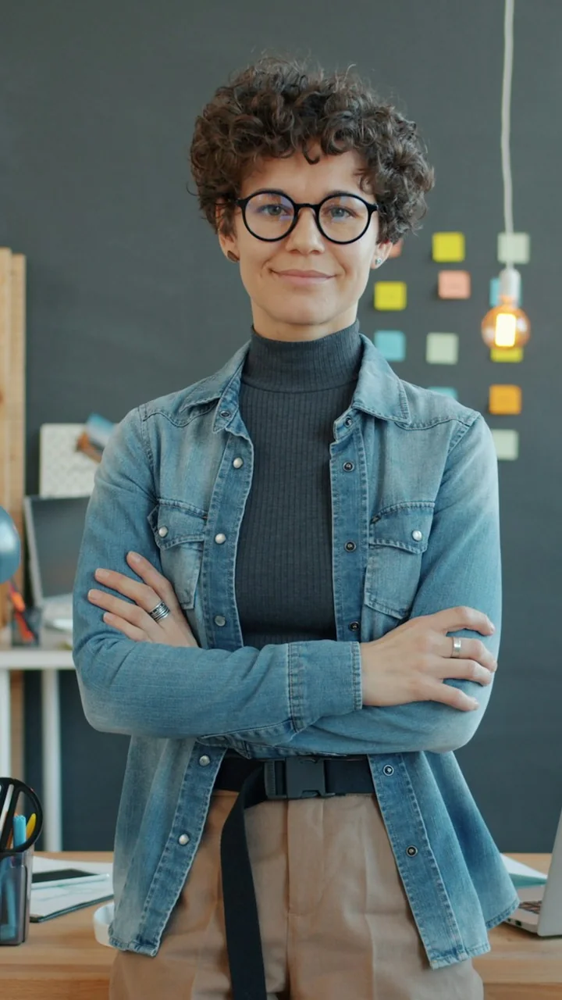
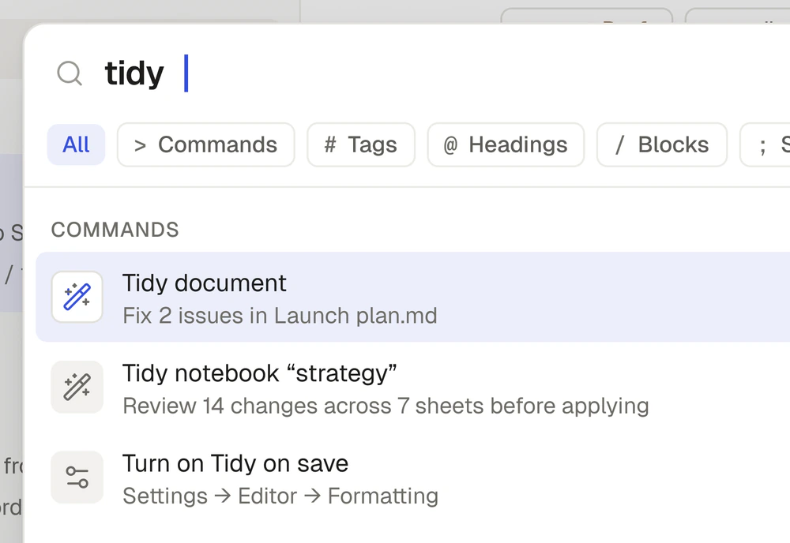
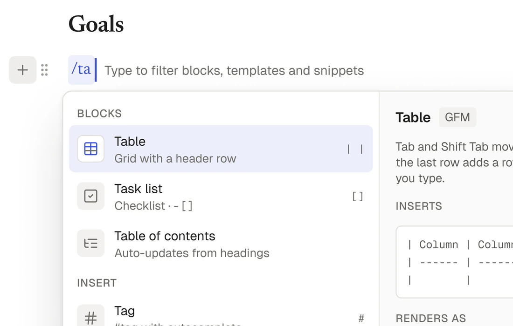
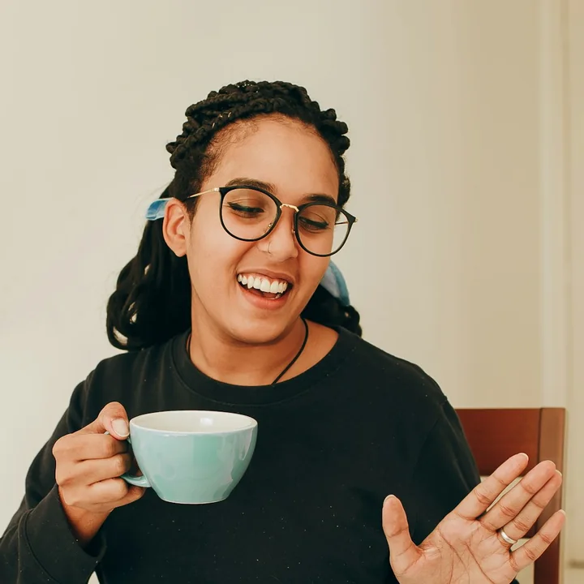
Write first, format later.If you show your screen to teach, sell or ship, Slipstream takes the editing off your plate.

Walk through a feature once. Zooms land on every click so viewers never squint.
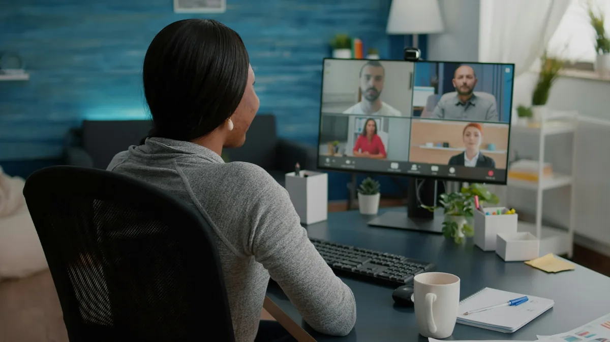
Record long lessons, then cut by transcript and export chapters for YouTube.
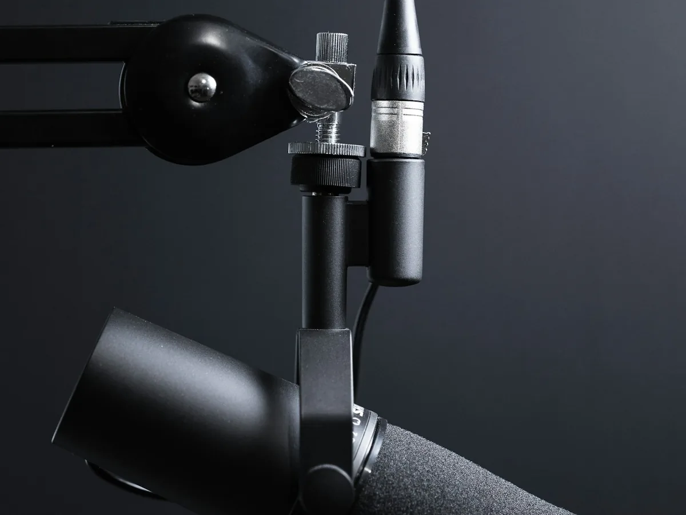
Turn a long take into vertical clips with clean captions and your face in frame.
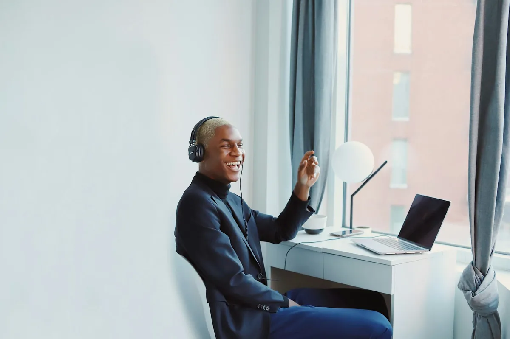
Skip the meeting. Record a two-minute update that’s easy to watch and quick to share.
Slipstream scores what you say, how lively you sound and what happens on screen, explains each pick, and exports the top ones as reels in one go.
Drafts a title, description and YouTube chapters from what you said, using an on-device model where available.
Send the cut to Final Cut Pro, Premiere or Resolve as FCPXML, XML or EDL with the original media linked. On desktop and in the browser.
Hardware-accelerated export on Apple silicon, NVIDIA and Intel. MP4 or WebM in the browser.
Screen, camera and mic are recorded apart, so you can fix one without touching the others.
Cut, zoom, split and undo without leaving the keys. Every shortcut is listed in the app.
Cloud editors upload first and edit later. Slipstream records, transcribes, edits and exports on your own machine, so there’s nothing to upload, leak or lose access to.
Whisper runs on your CPU or GPU. Your voice is never sent to a server.
Open it and record. There’s no sign-up, no usage cap and no logo stamped on your video.
Footage stays in your folders, or in your browser’s storage on the web. A .slipstream file moves a project between computers without any cloud.
The same edit runs everywhere: transcript cuts, zooms, layouts and captions.
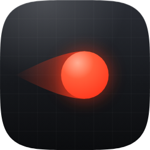
A Swift app on macOS, and a Rust-powered app on Windows and Linux, with hardware encoding.
The full editor in a Chrome tab. Whisper runs on WebGPU and export uses WebCodecs. Nothing to install.
The render engine is a command-line tool. Script batches, or let an AI agent drive the edit.
Most tools own one slice: a recorder, a transcript editor or a cloud repurposer. Slipstream covers capture, edit, captions and export on your own machine.
| Tool | Edits on-device | Browser version | Desktop app | Built-in recorder | Auto zoom | Edit by transcript | Captions | Price |
|---|---|---|---|---|---|---|---|---|
| SlipstreamRecorder and editor | Yes | Yes | Mac, Windows, Linux | Yes | Yes | Yes | Yes | Free |
| Screen StudioMac screen recorder | Yes | No | macOS only | Yes | Yes | Yes | Yes | $9/mo yearly, $29 monthly |
| CapOpen-source recorder | Local and cloud links | Chrome extension | Mac, Windows, Linux | Yes | Yes | Yes (since 0.6.3) | Yes | Free, Pro $12/mo |
| DescriptAI video and podcast editor | Cloud | Yes | Mac, Windows | Yes | No | Yes | Yes | Free tier, then from $16/mo |
| RiversideRemote recording studio | Records locally | Yes | Mac | Yes | No | Yes | Yes | Free tier, then from $24/mo |
| Recordly / OpenScreenOpen-source recorders | Yes | No | Mac, Windows, Linux | Yes | Yes | OpenScreen 2 | Yes | Free |
| RescriptOpen-source transcript editor | Yes | Yes | Desktop build | No | No | Yes | No | Free |
| OpusClipLong-to-short repurposer | Cloud | Yes | No | No | Reframe | Auto-clip | Yes | Free tier, paid plans |
| CapCutTemplate video editor | Cloud | Yes | Mac, Windows | Partial | Partial | Partial | Yes | Pro $19.99/mo |
| Eddie AIAgentic rough-cut editor | Cloud | Yes | Mac, Windows | No | No | Chat-driven | Yes | Credits from $10 |
Based on each vendor’s public pages as of November 2026. Features and prices change, so check the vendor’s site before deciding. “Edits on-device” means editing and AI run without uploading your footage.
Free on every desktop, with no account and no watermark. Prefer not to install anything? Open Slipstream Web instead.
x64 installer for Windows 10 and 11.
Native app for Apple silicon Macs.
x64 AppImage and Debian package.
Works in Chrome, Edge, Arc and Brave 120 or later. Records, transcribes and exports inside the tab, and your projects stay in that browser.
Your footage never leaves your machine.
Something missing? Open an issue on GitHub.
Yes. The desktop apps and Slipstream Web are free, with no account, no watermark and no usage caps.
No. Recording, transcription, editing and export all happen on your computer. The desktop apps have no servers to send footage to. Slipstream Web keeps projects in your browser’s storage and renders with WebCodecs.
Only code and the speech model. The first time you transcribe, it fetches the transcription library and a Whisper model (about 40 to 250 MB, depending on the quality you pick) from public CDNs. Your browser caches them and your audio is processed locally. You can also import an SRT or VTT file instead.
Desktop Chrome, Edge, Arc, Brave and other Chromium browsers (version 120 or later) support everything: recording, WebGPU transcription and MP4 export. Safari and Firefox support is partial while their WebCodecs support catches up, so use the desktop app there.
Slipstream is free and isn’t notarized (that needs Apple’s paid developer program), so macOS asks once for apps downloaded in a browser. Open it once, then go to System Settings → Privacy & Security and click Open Anyway. Or install from Terminal, which skips the prompt: curl -fsSL https://raw.githubusercontent.com/tanzir71/slipstream-releases/main/install.sh | bash (it checks the download’s SHA-256 and signature first).
Windows 10 or 11 (x64), an Apple silicon Mac with macOS 26 or later, or Linux x64 via AppImage or DEB. Camera effects like Center Stage and Portrait need supported Mac camera hardware and are captured automatically by the macOS build.
Each of those owns one slice: a Mac-only recorder, a cloud transcript editor, or a cloud repurposer. Slipstream does capture, transcript editing, zoom, camera layouts, captions and export in one local-first app, on every desktop OS and in the browser. See the comparison above.